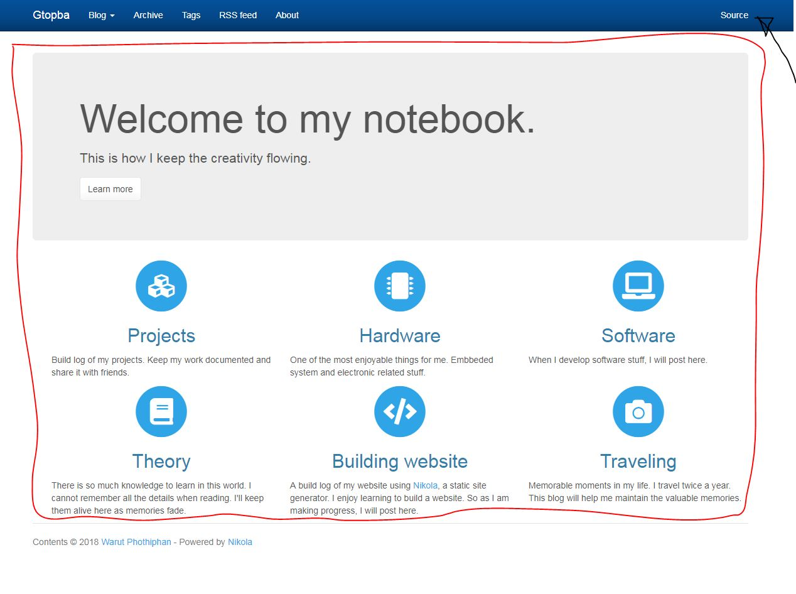

Customizing the website.
- Create your homepage
-
By default your homepage is the main blog page showing all your posts. If you prefer the default homepage, simply skip this step. Use your favorite editor to create index.html file in the "pages" folder. This will be your main page. Now edit it as you want. You can see source code of my main page by clicking "Source" at the top-right corner of my website. Alternatively, go check all my source project in my Github src branch of this repository. You just need to do the body part as the header and footer will be added by the compiler according to the template.
Body part in the red box.
in conf.py edit the following parameters to tell compiler to put the main blog page to sub-folder blog:
INDEX_PATH = "blog"
and to build the html page at main directory. The page.tmpl is the template that we will edit later:
PAGES = ( ("pages/*.rst", "pages", "page.tmpl"), ("pages/*.md", "pages", "page.tmpl"), ("pages/*.txt", "pages", "page.tmpl"), ("pages/*.html", "", "page.tmpl"), )Now you should have similar page like mine without those graphical icons which require 3rd party library. As I am using Cerulean theme, yours might look different. We will change the theme soon.
- Add more tabs and drop-down menu on navigation bar
-
For example:
NAVIGATION_LINKS = { DEFAULT_LANG: ( (( ("/blog/","Timeline"),("/pages/lst-ex/","List of examples") ), "Blog"), ("/archive.html", "Archive"), ("/categories/", "Tags"), ("/rss.xml", "RSS feed"), ("/pages/about-me/", "About"), ), } - Change theme and edit template
-
Choose your favorite theme from https://bootswatch.com/ then run this command with your favorite theme's name, for example, "cerulean":
nikola bootswatch_theme -s cerulean
Now your new theme is installed. You can modify your theme by tweaking in to the css file inside your new theme folder. In this case
theme/custom/asset
But we will get into that later. Now let's edit the templates by copying them from the base theme, in this case, bootstrap3:
nikola theme -c base.tmpl nikola theme -c base_helper.tmpl
This makes a copy of templates which overrides the parent template Bootstrap3. Firstly, have a look at base.tmpl, by default nikola inverse the navbar color. You can change navbar color to default.:
<nav class="navbar navbar-default navbar-static-top">
In base_helper.tmpl we add a graphic library font-awesome. Go to https://fontawesome.com/get-started and copy code similar to below and put it to roughly line 112 where you see other ccs libraries added:
<link href="/fontawesome/fontawesome-all.css" rel="stylesheet">
Now you can use icons on your pages
Comments
Comments powered by Disqus